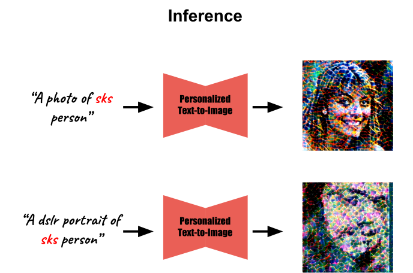
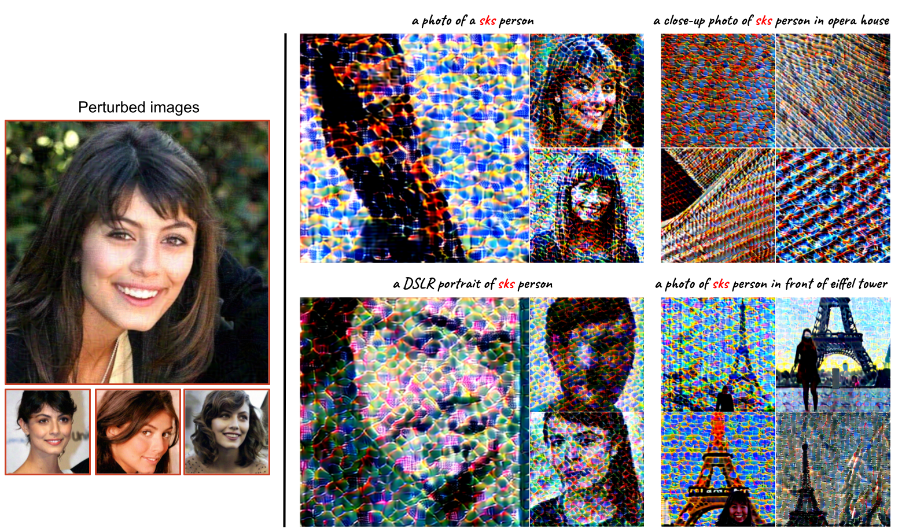
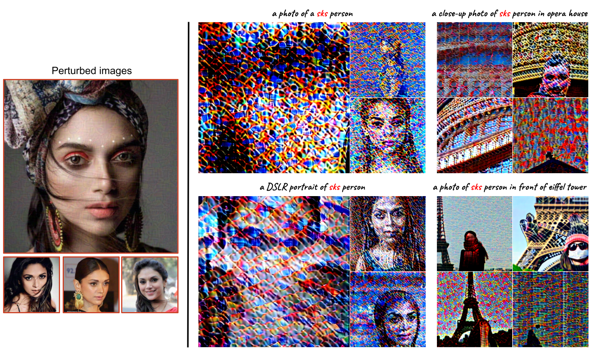
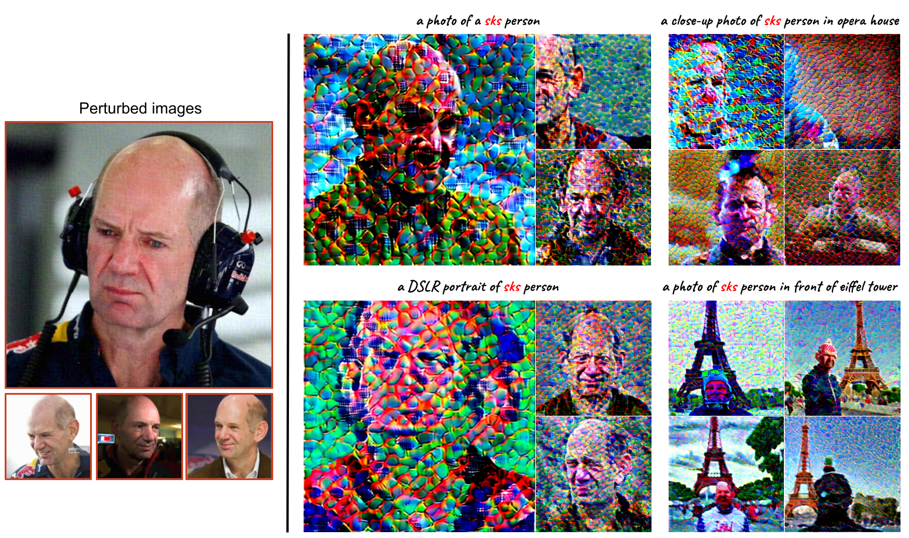
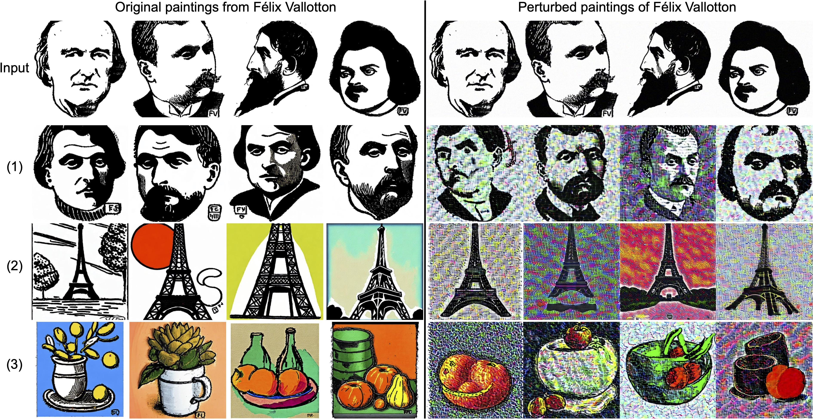
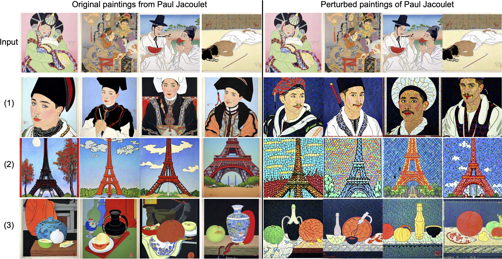
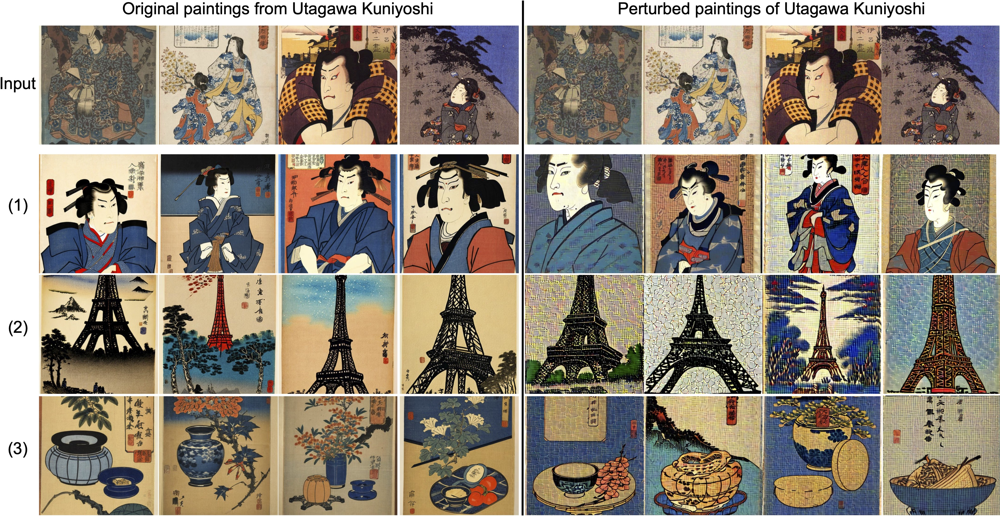
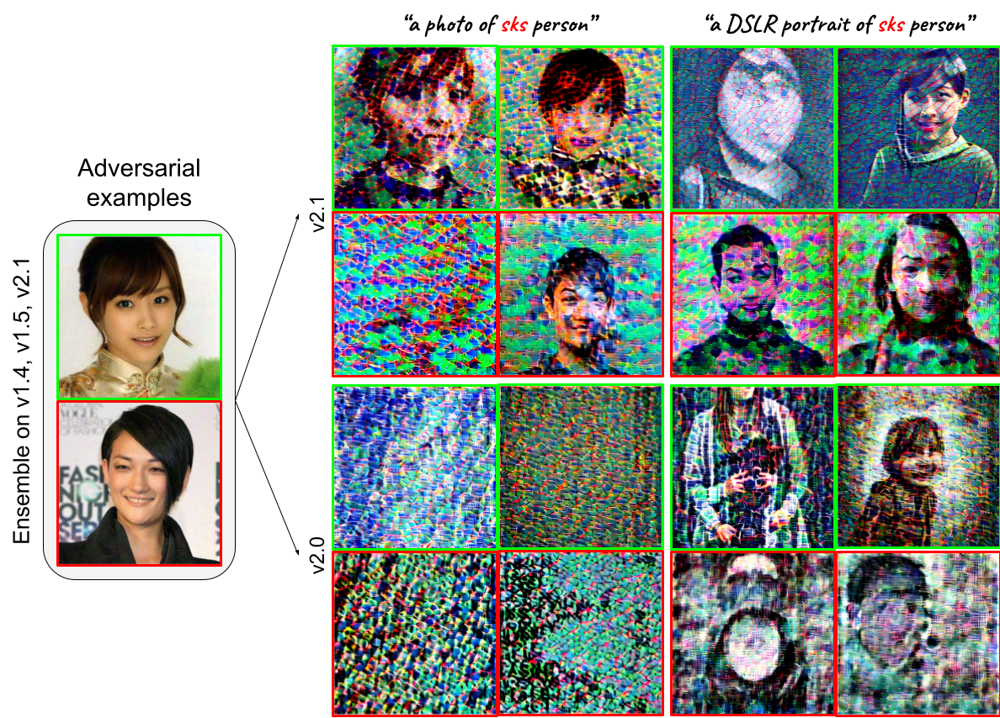
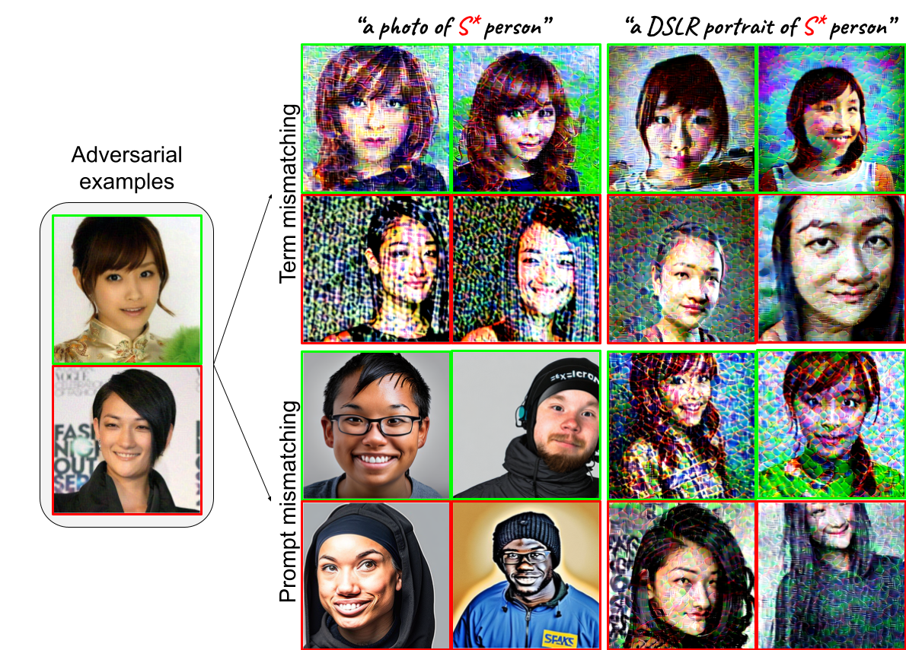

Text-to-image diffusion models are nothing but a revolution, allowing anyone, even without design skills, to
create realistic images from simple text inputs. With powerful personalization tools like DreamBooth, they can
generate images of a specific person just by learning from his/her few reference images. However, when misused,
such a powerful and convenient tool can produce fake news or disturbing content targeting any individual victim,
posing a severe negative social impact. In this paper, we explore a defense system called Anti-DreamBooth against
such malicious use of DreamBooth. The system aims to add subtle noise perturbation to each user's image before
publishing in order to disrupt the generation quality of any DreamBooth model trained on these perturbed images.
We investigate a wide range of algorithms for perturbation optimization and extensively evaluate them on two
facial datasets over various text-to-image model versions. Despite the complicated formulation of DreamBooth and
Diffusion-based text-to-image models, our methods effectively defend users from the malicious use of those models.
Their effectiveness withstands even adverse conditions, such as model or prompt/term mismatching between training
and testing.
Motivation
By finetuning a text-to-image model using DreamBooth, a malicious attacker is able to generate different images
of a specific person/concept (denoted as sks) in different contexts, for a purpose
of (1) creating highly-sensitive content,
(2) stealing artistic style, or (3) spreading misinformation. Hence, our motivation is to prevent such scenarios
by processing the subject's images
before online release.
*The black censor is manually added. To avoid causing unwanted negative impacts on real people, (1) is generated
from a DreamBooth model trained on images of a virtual character collected from Ai-idols Studio.
Defense Scenario
Given a few images of a subject collected online, a malicious attacker will finetune
the DreamBooth model to create harmful content targeting an
individual. Hence, before users release their images online, we protect
these photos using our method Anti-DreamBooth. The entire attack-defense flow is described below:
(a) We optimize imperceptible noises added to the original clean
images such that the perturbed images are nearly identical to the clean
ones and any DreamBooth models finetuned on these images have poor
quality.
(b) The attacker collects the perturbed images to fine-tune a text-to-image model following the DreamBooth
algorithm. Specifically, he fine-tunes the model with these images
paired with an instance prompt containing a unique identifier (e.g., "A
photo of sks person”); in parallel, a class-specific prior preservation loss is applied using a class
prompt (e.g., "A photo of a person”).
(c) Using the fooled DreamBooth model, the attacker can only
generate noisy and corrupted images of the subject regardless of
different sentences to synthesize the subjects. Our method can even
generalize to prompts unseen during perturbation training.

Controlled Settings
Results for protecting instances in a convenient setting. Here, we
assume to have prior knowledge about the pretrained text-to-image
generator, training term (e.g., “sks”), and training prompt the attacker
will use. We display the conditioning prompts above each image.



Sensitive-content Mitigation
As described in the motivation section, we present our approach to defending against the presence of sensitive
content that specifically targets women.
As depicted in the figure below, such contents are significantly distorted with noticeable artifacts, which are
induced by our method.
*The black censor is manually added.To avoid causing unwanted negative impacts on real people, we use images of a virtual
character collected from Ai-idols Studio.
Art Style Protection
Our method has also proven effective in preventing the imitation of famous artworks by well-known artists such as
Paul Jacoulet and Félix Vallotton, further highlighting its benefits.



Prompts
(1) A portrait in the style of sks
(2) A painting of eiffel tower in the style of sks
*Here we assume the subject to defend is not included in the pretrained text-to-image models, and the attacker has
to use DreamBooth instead of using the victim's name directly.
Adverse Settings
Results for protecting instances in adverse settings. For example, we don't have prior knowledge about the
pretrained text-to-image generator will be used by the attacker, so we use an ensemble of three versions of Stable
Diffusion (v1.4, v1.5, and v2.1) to train the adversarial noise and then validate on DreamBooth models which are
finetuned on Stable Diffusion v2.1 and v2.0. We test with two random subjects and denote them in green and red,
respectively.

Another possible case is that we may not have prior knowledge about the training term or prompt so we examine the
transferability of the learned adversarial noise when there is a change in the training terms/promtps.

In the first scenario, the training term is changed from “sks” to “t@t”. In the second scenario, the training
prompt is replaced with “a DSLR portrait of sks person” instead of “a photo of sks person”.
Here, S* is “t@t” for term mismatching and “sks” for prompt mismatching.
Real-world Settings
Our proposed defense not only works in laboratory settings but also in real-world scenarios, as it successfully
disrupts the personalized generation outputs of a black-box and commercialized AI service named Astria. First, we test our method's capability on Astria's
default configuration: Stable Diffusion version 1.5 with face detection enabled.
With the increasing availability of public text-to-image models, it is not always the case that the attacker uses
Stable Diffusion, but he
may opt for a different pretrained model. Here, we test another Astria setting, which is Protogen version 3.4
with Prism and
face detection enabled.
Prompts
(1) portrait of sks person portrait wearing fantastic Hand-dyed cotton clothes, embellished
beaded feather decorative fringe knots, colorful pigtail, subtropical flowers and plants, symmetrical face,
intricate, elegant, highly detailed, 8k, digital painting, trending on pinterest, harper's bazaar, concept art,
sharp focus, illustration, by artgerm, Tom Bagshaw, Lawrence Alma-Tadema, greg rutkowski, alphonse Mucha person
portrait wearing fantastic Hand-dyed cotton clothes, embellished beaded feather decorative fringe knots,
colorful pigtail, subtropical flowers and plants, symmetrical face, intricate, elegant, highly detailed, 8k,
digital painting, trending on pinterest, harper's bazaar, concept art, sharp focus, illustration, by artgerm,
Tom Bagshaw, Lawrence Alma-Tadema, greg rutkowski, alphonse Mucha
(2) close up of face of sks person fashion model in white feather clothes, official balmain
editorial, dramatic lighting highly detailed
(3) portrait of sks person prince :: by Martine Johanna and Simon Stålenhag and Chie Yoshii and
Casey Weldon and wlop :: ornate, dynamic, particulate, rich colors, intricate, elegant, highly detailed,
centered, artstation, smooth, sharp focus, octane render, 3d
As can be seen, our method significantly reduces the quality of the generated images in various complex prompts
and on both target models. This highlights the robustness of our approach, which can defend against these services
without requiring knowledge of their underlying configurations.
Uncontrolled Settings
In case the malicious attacker may get in hand some clean images of the target subject and mix them with the
perturbed images for DreamBooth training, our Anti-DreamBooth still can protect users unless there are too many
clean examples. As shown below, our defense is still quite effective when half of the images are perturbed, but
its effectiveness reduces when more clean images are introduced.
Robustness Evaluation
To evaluate the robustness of the proposed Anti-DreamBooth, we conducted extensive experiments using various simple image processing techniques. Swipe left and right the image below to see more in detail.
Firstly, we examine a scenario where the malicious attacker applies Gaussian
blur to perturbed images before DreamBooth finetuning. Evidently, the
overall quality of the generated images remains low, with blurry texture and unnatural backgrounds.
Not only blur, but our method is also resilient to JPEG
compression, a widely-used image compression algorithm. Noticeable artifacts
can be seen in the generated images due to the degradation from either our method or the compression itself.
Last but not least, we tested our method against the Adverse
Cleaner which is, as its name suggests, a library for cleaning adversarial noise. Notably, our defense method demonstrated
its robustness even against the smoothing effect of this sophisticated denoiser.
Even though the above results indicate that our defense scheme withstands basic image processing techniques, we acknowledge that these methods do not represent all potential attacks to bypass our protection.
Thus, we plan to explore additional algorithms to improve our defense robustness in future works further, as mentioned in the Conclusions section of our paper.
BibTex
@InProceedings{le_etal2023antidreambooth,
title={Anti-DreamBooth: Protecting Users from Personalized Text-to-Image Synthesis},
author={Thanh Van Le, Hao Phung, Thuan Hoang Nguyen, Quan Dao, Ngoc Tran and Anh Tran},
booktitle={Proceedings of the IEEE/CVF International Conference on Computer Vision (ICCV)},
year={2023}
}
Acknowledgements:
We thank Nataniel Ruiz, Yuanzhen Li, Varun Jampani, Yael Pritch, Michael Rubinstein, and Kfir Aberman for the
wonderful work DreamBooth and its project page. Finally, a special "thank you" to Stability AI,
RunwayML and CompVis for publishing different version of pretrained Stable Diffusion models.